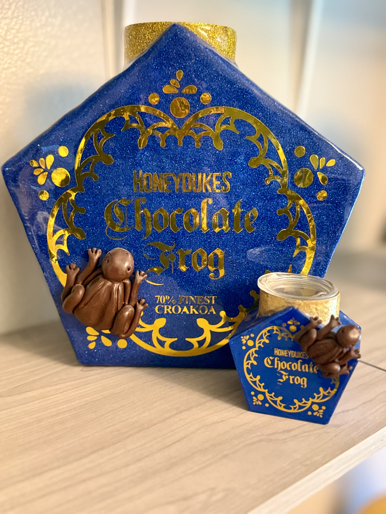

My Collection
This is my gallery of functional art made by me. Each sculpture is a usable stainless steel tumbler. The collection presented here are some of my favorite pieces I have made.

Highland Cow
30oz Stainless Steel Tumbler | 2023
This is the first 3d tumbler I made. It was made using polymer clay and coated with epoxy. This tumbler started my love of sculpting.

Big Debbie
35oz Stainless Steel Tumbler | Polymer Clay |2023
Who doesn't love a Little Debbie Cake during Christmas? I love them so much I decided I needed to have a Big Debbie year round.

Myra Maines Tombstone
35oz Stainless Steel Tumbler | Polymer Clay | 2024
This is a 35oz stainless steel tumbler I made for Halloween 2024.

Violet's Books
35oz Stainless Steel Tumbler | Mixed Media | 2023
I feel in love with Fourth Wing when it came out and I love to make fan art. This tumbler was a lot of fun to make but was also a lot of work. I had to digitally sculpt the books with a hole so the tumbler would fit. I had to design and cut out the scales and hand lay them on the tumbler. The books are 3d printed, the dragon scales are hand laid individually cut vinyl, the dragon's were made with a resin and mica poweders. The dagger and flowers are sculpted with polymer clay.

Honeydukes Chocolate Frog
30oz Stainless Steel Tumbler | 3oz Stainless Steel Tumbler| Polymer Clay | 2024
My love of fan fiction spans many fandoms. Harry Potter is one of my longest loved fandom. The frog was a fun challenge to sculpt. Sculpting generic shapes and using molds are much eaier than sculpting something from scratch.

Elf Workshop
35oz Stainless Steel Tumbler | Polymer Clay | 2024
This is where Santa's elves make all the toys, wrap them, and then load them in the Santa's Bag. I love Christmas so I like to sculpt Christmas themed tumblers.